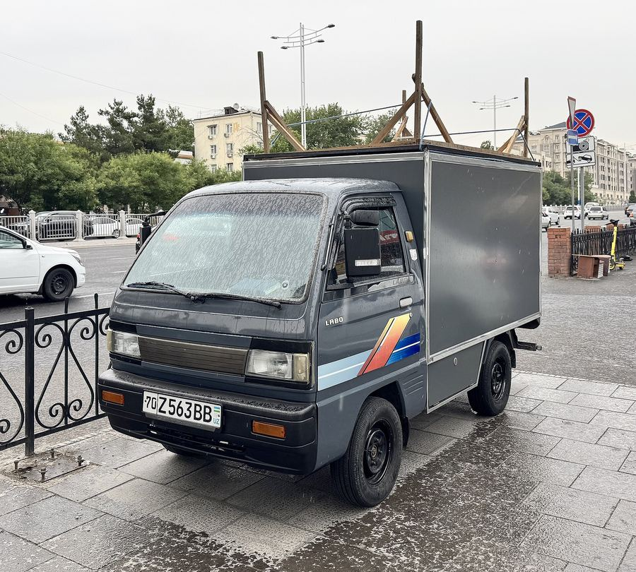

Kichik yukingizni yo'lga chiqayotgan qatnov bilan jo'nating
Manzilni tanlang, mos qatnovni belgilang va yuk haqida qisqa yozing.
Qatnovlarni ko'rishM39 yo'li
Uch qadamda jo'nating
Manzilni tanlang
Yuk qaysi tumanga borishini belgilang — ro'yxatda faqat o'sha yoqqa ketadigan qatnovlar qoladi.
Qatnovni belgilang
Jo'nash kuni va vaqti sizga mos keladigan qatnovni tanlang.
Yuk haqida yozing
Ismingiz va yukning qisqa tavsifi kifoya. So'rov shu zahoti tasdiqlanadi.

Yuk qayerga borishi kerak?
Bu manzilga hozircha qatnov yo'q. Boshqa tumanni tanlang.
Ko'hitang tog'laridagi yo'l
Qatnovlarga qaytish
Yuk jo'natish so'rovi
Ko'hitang tog'laridagi yo'l
So'rov yuborildi
Bu sinov loyihasi: haydovchiga haqiqiy xabar bormaydi, so'rov faqat shu brauzerda saqlanadi.
Ko'hitang tog'laridagi yo'l
Yuborilgan so'rovlar
Hali so'rov yubormadingiz. Qatnovni tanlab, birinchisini yuboring.
Qatnov tanlash